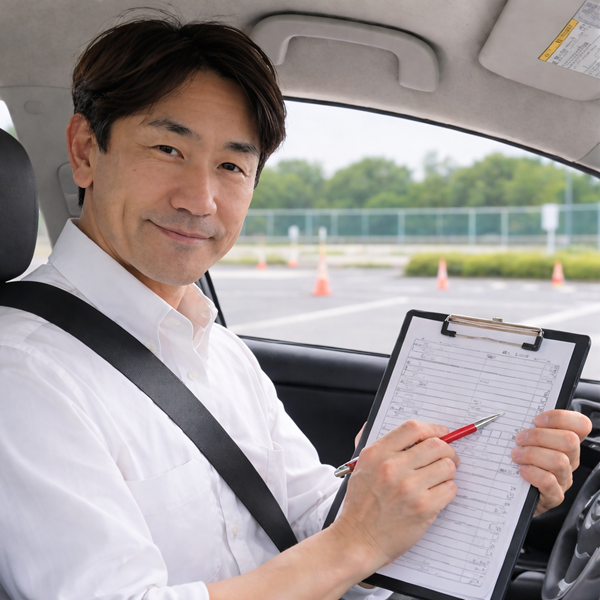

出張教習 三重・愛知・岐阜対応
ペーパードライバー・免許取りたて・初心運転者・ブランクのある方専門
「仕事で急に車が必要になった」「家族の送迎をしたい」「一人で運転するのが怖い」
指導員歴17年のプロが、論理的で分かりやすいコツを伝授。
無理のない「練習手順」で「楽しく」上達をサポートします。

教習車では運転できても、 自宅の車・家の駐車場・近所の細い道はまったく別物です。
はじめて自分の家の車を運転する時こそ、一番不安になりやすいポイント。 親御さんに横に乗ってもらう前に、プロが助手席でしっかりサポートします。
ご自宅の車で、よく使う道・学校やバイト先までのルート・駐車場まで、 初心運転者の実生活デビューを安全にサポートします。
教習指導17年に加え、タクシー・大型トレーラーの実務経験を活かし、 市街地・狭い道・駐車・車線変更まで実践的に指導。 「目からウロコの運転理論」で「納得」があるから、身につきます。
17年の経験から導き出した独自のカリキュラム。無理・無駄な練習はせず、できることから一段ずつ積み上げるので上達が早いです。
お子様同乗OKなママ向け配慮から、仕事での利用や高速、車庫入れ特訓まで、一人ひとりの「やりたいこと」「困っていること」に幅広く対応します。
1回でしっかり上達を実感できる人気レッスン
〇浅く何回に分けるより、1回でしっかり練習時間を確保することで、
駐車・送迎・車線変更まで、まとめて練習でき上達しやすくなります。
〇また、1回で卒業するか、続けて受講するかは、お客様の希望を優先し、こちらから強制することは絶対にありません。
⭐高速道路練習も可能です（高速料金のみ実費）。
はじめての方の多くが「140分でかなり安心して運転できた」と実感されています。
★追加料金は一切ありません（高速代・遠方出張料を除く）
〇基本操作から応用まで、あなたの今の不安や目的に合わせて
完全オーダーメイドでカスタマイズします。
〇まずは発進・右左折・車線変更・駐車など、
基本から応用までしっかりできるように進めます。
〇そのうえで希望があれば、
送迎ルート、職場までの通勤、スーパー駐車場、
狭い道、高速道路、ご自宅周辺なども
一緒に練習していきます。
〇駐車練習だけ。高速走行だけ。のような、ご希望のみの練習もできます。
「今できるようになりたいこと」まで含めて140分しっかり練習。
無理なく一歩ずつ進めるので、
「運転できるようになった」を実感できます。
満足できるまで何回でも受講可能です。
ワンレッスンで170分以上しっかり練習したい方は、 30分ごと +3,000円で延長できます。
170分レッスン
200分レッスン
遠距離・高速・長時間練習対応
当日でも予約状況に空きがあれば追加OKです。
遠距離走行をご希望の方、なかなか日程が取れない方にも人気です。
内容はすべて自由にカスタマイズできます
チャイルドシートがあればお子様と一緒に練習OK。ぐずり対応等があれば「5分無料延長」も付けますから安心ですよ。
マイカー練習でも助手席から私が止めれます。バックだってできちゃいます。教習車（無料）での練習も可能です。
幼稚園まで・職場まで等、目的に合わせた練習が可能です（高速代等は実費負担）。お気軽にご相談ください。
「本当に運転できるようになるの？」という不安が、 たった1〜2回で安心に変わったというお声を多くいただいています。
他で何回かレッスンを受けても駐車が全然できませんでしたが、 先生は「どのタイミングでハンドルを切るか」を理論的に教えてくれて、 たった2回で自分でも驚くほど停められるようになりました。
40代・女性（駐車が苦手）子どもの送迎ルートを走れるようになりたくてお願いしました。 必要な道だけを重点的に練習してくれたので、 初回140分でかなり安心して走れるようになりました。
30代・女性（子育てママ）通勤で車が必要になり、高速道路がずっと怖かったのですが、 合流・車線変更の考え方を順番に整理して教えてもらい、 1回で苦手意識がかなり減りました。
30代・会社員元教習所指導員 / 指導歴17年 / タクシー・大型トレーラー経験
はじめまして。安心・ドライビングマイスターの今井です。
教習所で17年間、たくさんの方の「怖い」「苦手」と向き合ってきました。
特に多いのは、子どもの送迎、仕事復帰、長いブランクなど、 「運転できないと生活が不便になる方」です。
私が大切にしているのは、怒らず・否定せず、 その方のペースに合わせて「できた」を積み重ねること。 わからないことを一つずつ整理していけば、 運転は必ずラクに感じられるようになります。
教習指導だけでなく、タクシーや大型トレーラーの実務経験もあるため、 狭い道・駐車・交通の流れ・実生活で使うルート練習まで、 生活で本当に使える運転を分かりやすくお伝えできます。
「私でもできるかな？」という不安がある方こそ大歓迎です。 一緒に自信を育てていきましょう。
はい。怒ったり否定したりする指導は一切行いません。「なぜ怖いのか」を整理しながら、安心してできるようになるまで丁寧にサポートします。
可能です。普段使う車で練習することで、実際の生活にすぐ活かせます。簡易補助ブレーキを持参しますので、安全面もご安心ください。
大歓迎です。チャイルドシートがあれば同乗可能です。ぐずり対応等での「5分無料延長」もございます。
LINEで無料相談
お悩み・ご希望をヒアリング
日時・待ち合わせ場所を決定（自宅や駅等）
当日レッスン開始
レッスン対応時間
夜間（18:00以降）は通常行っておりませんが、
お仕事帰りなどご希望がある場合は、できる限り調整いたします。(夜間料金＋1000～）)
💬 LINEで「夜も可能ですか？」と送るだけでOK！
「私でも運転できるかな？」そんな不安こそ、お気軽にご相談ください
ご希望日時はお早めに。
※一人で運営しているため、レッスン中や移動中はお返事が遅れることがございます。何卒ご了承ください。
お急ぎの方は、履歴の残るLINEが最も確実です。
下記エリアは追加料金なし
地域に応じて追加料金をご案内します
💡 待ち合わせで追加料金なしになる場合もあります
無料エリア内の駅・商業施設で待ち合わせできる場合は、 追加料金なしで対応できます。
桑名市から40km～60kmの地域は通常 +3,000円〜 の出張料がかかりますが、 100分以上の延長を追加すると、 出張料を無料にして、その分を練習時間へ変更できます。
例：日進市の場合
通常：140分 15,400円 ＋ 出張料3,000円 → 17,400円
延長100分追加：240分 21,400円 → 出張料無料
※60km以上の地域は対象外となります。
| 屋号 | 安心・ドライビングマイスター |
|---|---|
| 代表者 | 今井 悟朗 |
| 所在地 | 三重県桑名市東方2248 ※詳細はお問い合わせ時に提供します |
| 電話番号 | 090-8459-3490 |
| 支払方法 | 当日現金払いのみ |